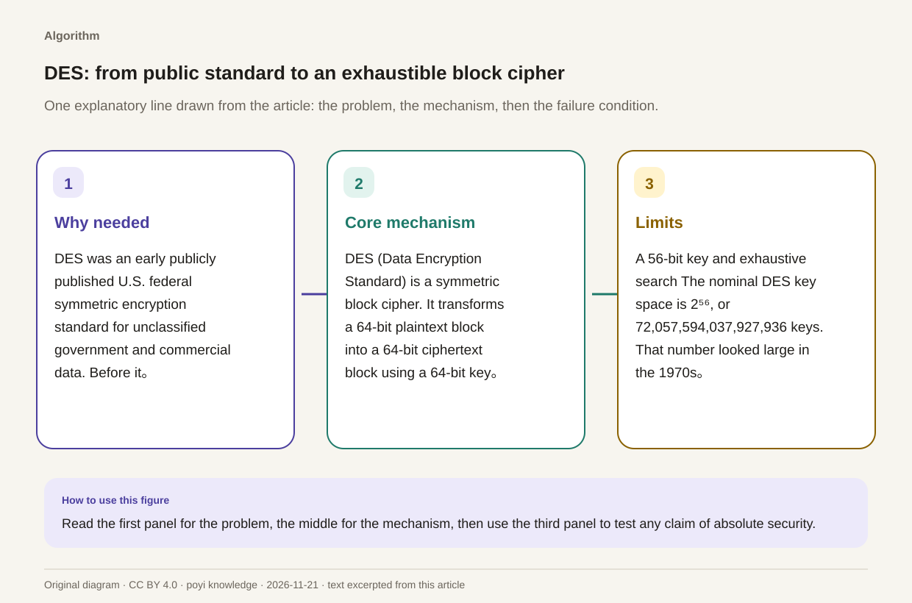
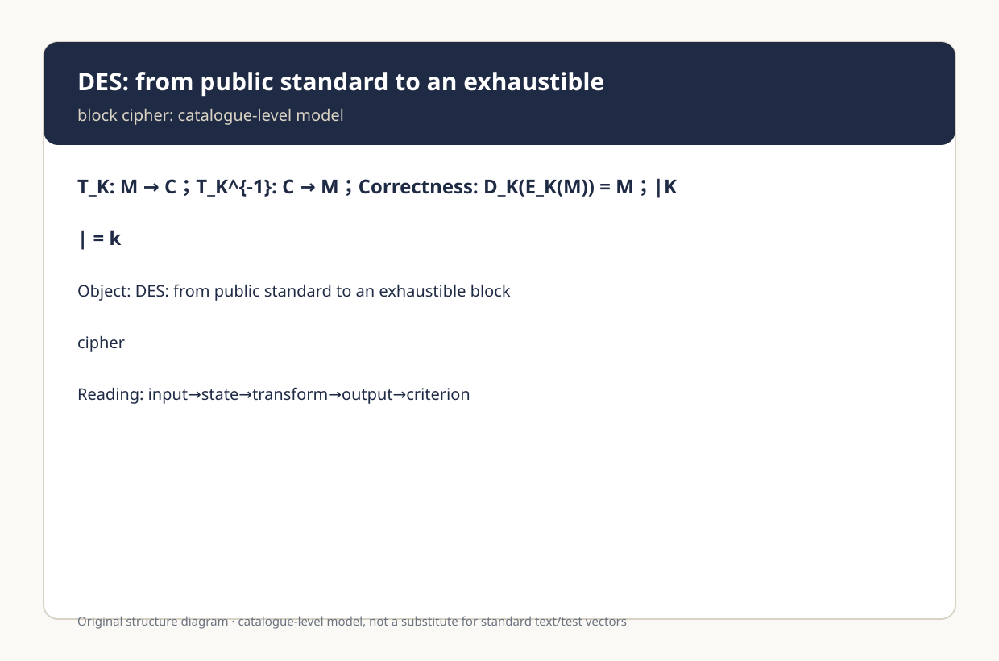

Principles
Algorithm: Data Encryption Standard (DES 数据加密标准). DES (Data Encryption Standard) is a symmetric block cipher. It transforms a 64-bit plaintext block into a 64-bit ciphertext block using a 64-bit key, of which 56 bits participate in the algorithm and 8 bits are parity bits. Two parties with the same key can encrypt and decrypt; the algorithm is public and confidentiality "depends on the secrecy of the" key. DES is a 16-round Feistel structure. The 64-bit input first passes through the Initial Permutation (IP) and is split into 32-bit halves L₀ and R₀. Round i computes:
R_i = L_{i−1} ⊕ f(R_{i−1}, K_i)
where K_i is the 48-bit round subkey. After 16 rounds the halves are swapped and the result passes through the Final Permutation (FP). FP is the inverse of IP: applying IP and then FP returns the original block. The round function f does four things: it "expands the 32-bit right half to 48 bits" with the expansion permutation E; XORs the result with the 48-bit subkey; splits it into eight 6-bit groups, each passed through an S-box that outputs 4 bits (32 bits total); and permutes those 32 bits with P. The S-boxes are the only nonlinear part of DES and the main object of differential and linear cryptanalysis. Subkeys come from the key schedule. The 64-bit key first passes through PC-1, which discards the eight parity bits and leaves 56 bits. The result is split into two 28-bit halves, rotated left according to a fixed schedule, and passed through PC-2, which selects 48 bits for that round. Sixteen rounds therefore produce sixteen 48-bit subkeys, 768 bits of subkey material in total. Decryption uses the same hardware or code with the sixteen subkeys in reverse order. The Feistel structure makes every round invertible even though f itself is not one-to-one; this is an engineering property that distinguishes it from a substitution-permutation network.

Why it matters
DES was an early publicly published U.S. federal symmetric encryption standard for unclassified government and commercial data. Before it, strong cryptography was largely the concern of military and intelligence organizations; DES put algorithm details, test vectors and implementation requirements into a public standard that banks, vendors and universities could implement and evaluate together. It became one of the starting points for modern block-cipher engineering and public cryptanalysis.
DES also makes the life cycle of a standard concrete. An algorithm can be widely deployed and repeatedly reaffirmed, yet still be retired when key space and computing power change. NIST's historical review notes that DES was expected to serve for about 15 years, but remained in federal legacy systems for decades and was only retired in 2005.
It created an ecosystem: modes of operation, message authentication, key management, hardware acceleration and validation testing all grew around DES. FIPS 81 defined ECB, CBC, CFB and OFB modes, which later block ciphers inherited. DES is also the background for understanding AES design trade-offs, the 3DES transition and the distinction between block size and key size as security parameters.
Applications
Typical DES deployments included sensitive but unclassified government data, financial transactions and older network protocols. NIST's history records that DES was adopted by ANSI as X3.92, the Data Encryption Algorithm, for protecting financial information; in retail banking it protected the personal identification numbers (PINs) used in bankcard transactions. It was also adopted by ISO as DEA-1 and appeared widely in cryptographic products of the period.
DES is normally used inside a mode of operation, not by itself. ECB encrypts each 64-bit block independently, so identical plaintext blocks produce identical ciphertext blocks. CBC XORs the previous ciphertext block with the current plaintext block, hiding repetition, but it needs an initialization vector and correct padding. CFB and OFB turn the block cipher into a stream-like generator. A mode defines how the block cipher is used; it cannot repair a 56-bit key or a 64-bit block.
3DES/TDEA extends DES by using three DES keys in an encrypt-decrypt-encrypt (EDE) construction. TDEA key-bundle options and modern usage limits belong to the 3DES entity and are not detailed here. FIPS 46-3 recognized TDEA as a federal algorithm in 1999 while demoting single DES to legacy systems only.

Limits & attacks
The nominal DES key space is 2⁵⁶, or 72,057,594,037,927,936 keys. That number looked large in the 1970s, but became searchable as dedicated hardware and distributed computing spread. In 1998 the EFF's Deep Crack machine completed a public DES challenge in less than three days, breaking the previous 39-day record held by a large network of computers. A 56-bit key is not an acceptable security boundary today.
At 10⁹ keys per second, exhausting 2⁵⁶ keys takes about 7.21×10⁷ seconds, roughly 834 days or 2.2834 years; at 10¹² keys per second it takes about 20.02 hours. These are arithmetic lower bounds, not measurements that include candidate filtering, key verification or practical parallelism. They show that the problem "is the size of the key space", not the speed of a single implementation.
The S-boxes are the nonlinear core of DES. Differential and linear cryptanalysis in the 1990s significantly reduced its theoretical margin. Differential cryptanalysis exploits high-probability relations between plaintext and ciphertext differences; published results for the full 16-round DES require a pool of about 2⁴⁷ chosen plaintexts to obtain about 2³⁶ usable ciphertexts. Linear cryptanalysis exploits linear approximations involving plaintext, ciphertext and key bits; a 1994 experiment used about 2⁴³ known plaintexts against full DES and recovered all 56 key bits in fifty days. These data volumes are already impractical; they show that block-cipher security cannot be explained by key length alone, and that data complexity is not the same as total attack cost.
The DES key schedule has structural problems. Four weak keys make all subkeys identical, so encrypting twice returns the plaintext. Twelve semi-weak keys (six pairs) make one key the inverse operation of another. There is also a complementation property: if key K encrypts plaintext P to ciphertext C, then the bitwise complement of K encrypts the bitwise complement of P to the bitwise complement of C. These are properties of the algorithm, not implementation bugs. They do not break DES by themselves and do not change the exhaustion cost for random keys, but implementations must reject these specific keys.
A DES block is only 64 bits. In CBC and similar modes, when plaintexts are drawn from a large space, the probability of a repeated ciphertext block becomes significant after about 2³² blocks, roughly 32 GiB of data. The Sweet32 family of attacks exploits such birthday collisions to recover parts of plaintext from long connections. Block size is therefore a security parameter alongside key size: even a longer key would not make a 64-bit block suitable for modern high-volume protocols.
FIPS 46-3 was withdrawn in 2005 (the retained texts attest the year; the precise date is unattested in this dossier). NIST SP 800-67 Revision 2 was withdrawn on January 1, 2024, and TDEA is no longer an approved block cipher; the withdrawal notice allows it for decryption, key unwrapping and MAC verification of already-protected data, but not for new encryption protection. DES itself belongs only in legacy systems, historical teaching and compatibility tests; new systems should use AES or another modern algorithm.
History
In the early 1970s the U.S. National Bureau of Standards (NBS) began a symmetric-key algorithm standard for federal agencies and commercial organizations and issued a public call for candidates. It received an algorithm from IBM in 1974; IBM "had recently developed a family of cryptographic algorithms" for financial transaction protection, such as ATMs. NBS used the IBM "algorithm as the basis for its proposed" DES and held public workshops in 1976 to analyze its utility and security. In 1977 NBS issued FIPS 46, making DES a U.S. federal standard.
The standardization was controversial. NIST's historical review records that NSA participated in the evaluation and recommended changes, which IBM made; some critics suspected that NSA had deliberately weakened the algorithm or introduced a trapdoor. A second controversy concerned key length: critics argued that 56 effective bits were "too short for long-term security", and Diffie and Hellman published their classic 1977 analysis of DES exhaustion costs. NBS replied that DES was adequate against "practical attack for the anticipated life of the standard" and would be reviewed every five years.
DES was reaffirmed in 1983, 1988, 1993 and 1999, and finalized as FIPS 46-3. In 1998 the EFF's dedicated machine completed a public DES challenge in less than three days, sharply reducing the previous 39-day record. FIPS 46-3 was withdrawn in 2005, and the DES era ended. TDEA survived as a transition scheme until it too was withdrawn in 2024.
Worked example & verification
Worked example
Take one published or standard test vector, record the input, the ordered steps and the byte-exact output, then compare with an independent implementation. Where no citable numeric vector is available, the entry records only structural steps and does not invent an output.
References
- Wikipedia search entry for DES 数据加密标准. https://zh.wikipedia.org/w/index.php?search=DES%20%E6%95%B0%E6%8D%AE%E5%8A%A0%E5%AF%86%E6%A0%87%E5%87%86
- Handbook of Applied Cryptography (Menezes, van Oorschot, Vanstone). https://www.cacr.math.uwaterloo.ca/hac/